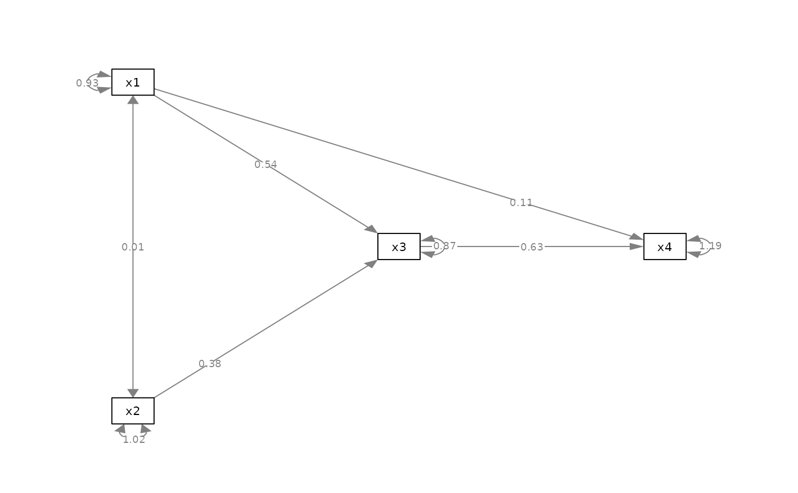
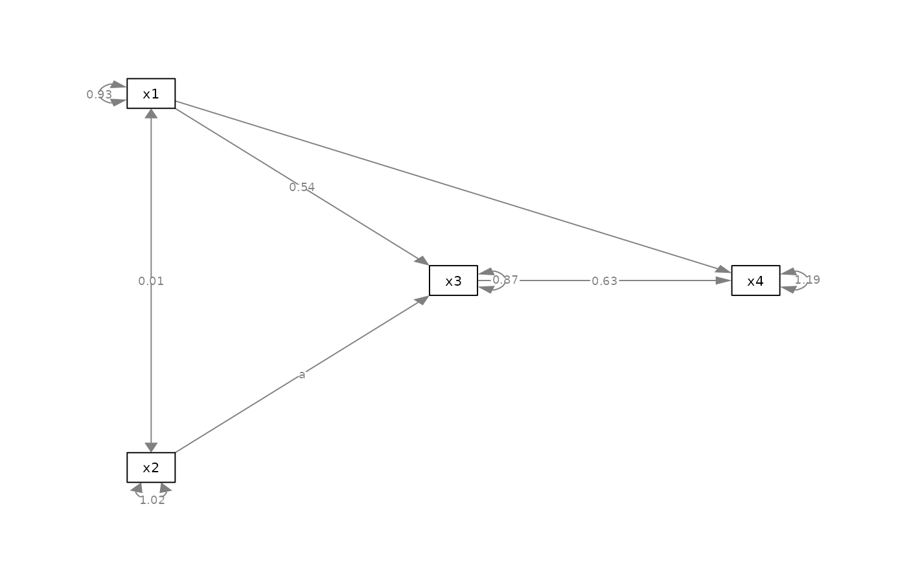
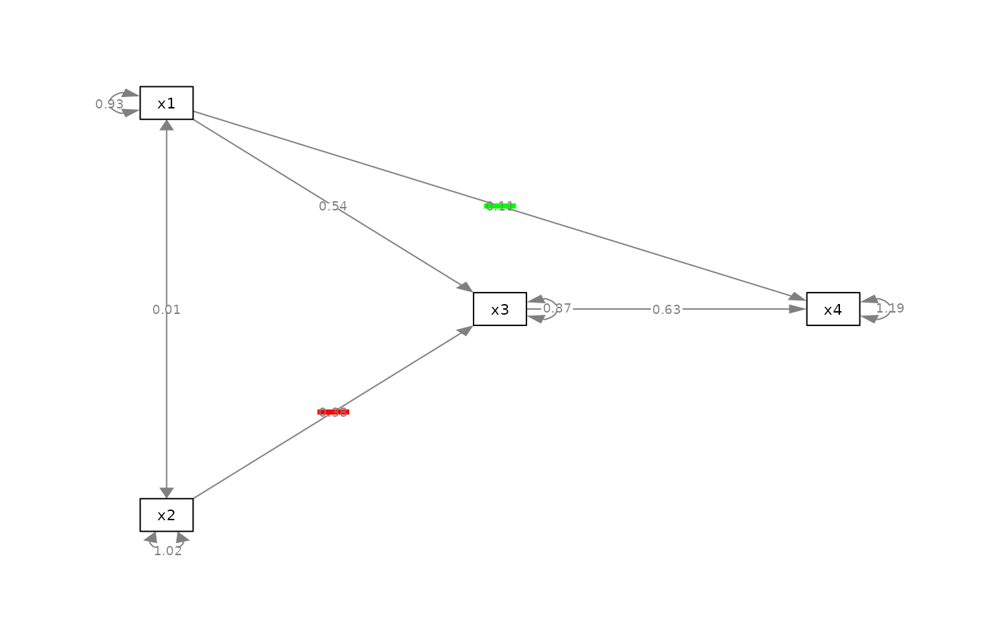
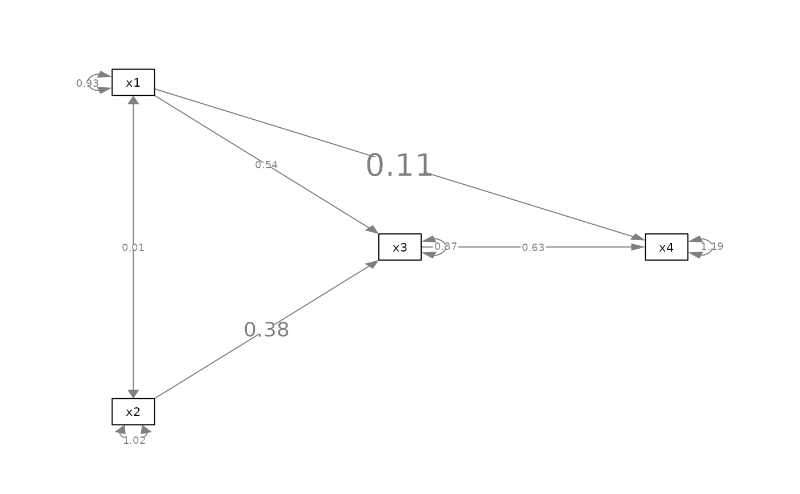

Set Edge Label Attributes of Selected Edges
Source:R/set_edge_label_position.R
set_edge_label_attributes.RdSet the attributes of selected edges, such as the label position.
Usage
set_edge_label_position(
semPaths_plot,
position_list = NULL,
check_direction = TRUE
)
set_edge_label(semPaths_plot, label_list = NULL, check_direction = TRUE)
set_edge_label_bg(semPaths_plot, label_bg_list = NULL, check_direction = TRUE)
set_edge_label_size(
semPaths_plot,
label_size_list = NULL,
how = c("ratio", "value"),
check_direction = TRUE
)Arguments
- semPaths_plot
A qgraph::qgraph object generated by semPlot::semPaths, or a similar qgraph object modified by other semptools functions.
- position_list
The new position. See 'Details' on how to set this argument. If a list of named list is used, the element for new position should be named
new_position.- check_direction
If
FALSE, the direction of an edge is ignored. For example, bothy ~ xandx ~ ywill affecty ~ x,x ~ y, andy ~~ x. Useful when we want to change an edge regardless of its direction and whether it is directional.- label_list
The new label. See 'Details' on how to set this argument. If a list of named list is used, the element for new label should be named
new_label.- label_bg_list
The new background color. See 'Details' on how to set this argument. If a list of named list is used, the element for new background color should be named
new_label_bg.- label_size_list
How the label sizes are to be changed. See 'Details' on how to set this argument. If a list of named list is used, the element for new background color should be named
new_label_size.- how
How the width will be changed. If
"ratio", then the new width is the original width multiplied by the supplied value. If"value", then the new width is set to the supplied value.
Details
Modify a qgraph::qgraph object generated by semPlot::semPaths and change the attributes of the edge label of selected edges.
Currently, the following attributes are supported:
Edge label position.
Edge label content.
Edge label background color.
Edge label size.
How to specify the values
There are three approach to specify the value.
First, the values can be a named
vector of the values, the recommended
approach. The name of an
element should be the path as
specified by lavaan::model.syntax
or as appeared in
lavaan::parameterEstimates(). For
example, to change position of the
edge label of the path regressing y
on x, the name should be "y ~ x".
Second, the values can be specified
by a list of named lists, each named
list should have three named values:
from, to, and the new value (name
depends on the attribute). The value
of the edge label of the edge from
from to to will be set to this
new value. For example, for
set_edge_label_position(),
list(list(from = "x1", to = "y", new_position = .2), list(from = "x2", to = "y", new_position = .7)) is
equivalent to the named vector above.
The second approach is no longer recommended. It was supported for backward compatibility.
Third, the value can be a single value, which will be used to set the attribute of all edges.
Setting Edge Position
When setting the edge position,
the value is the position. The
mid-point of the edge is 0.5. The
closer the value to 1, the closer the
label to the left-hand-side node (y
in this example). The closer the
value to 0, the close the label to
the right-hand-side node (x in this
example). For example, c("y ~ x1" = .2, "y ~ x2" = .7) moves the path
coefficient from x1 to y closer
to x, and the path coefficient from
x2 to y closer to y.
Setting Label Size
The function set_edge_label_size()
works in two modes. With how = "ratio",
the new label size is the original
size multiplied by the supplied value.
For example, if the value is 2, the size
of a label is doubled. With how = "value",
the new size is set to be equal to the
supplied value. For example, if the value is
2, the size of a label is set to 2.
label positions for selected edges changed.
Examples
mod_pa <-
'x1 ~~ x2
x3 ~ x1 + x2
x4 ~ x1 + x3
'
fit_pa <- lavaan::sem(mod_pa, pa_example)
lavaan::parameterEstimates(fit_pa)[, c("lhs", "op", "rhs", "est", "pvalue")]
#> lhs op rhs est pvalue
#> 1 x1 ~~ x2 0.005 0.957
#> 2 x3 ~ x1 0.537 0.000
#> 3 x3 ~ x2 0.376 0.000
#> 4 x4 ~ x1 0.111 0.382
#> 5 x4 ~ x3 0.629 0.000
#> 6 x3 ~~ x3 0.874 0.000
#> 7 x4 ~~ x4 1.194 0.000
#> 8 x1 ~~ x1 0.933 0.000
#> 9 x2 ~~ x2 1.017 0.000
m <- matrix(c("x1", NA, NA,
NA, "x3", "x4",
"x2", NA, NA), byrow = TRUE, 3, 3)
p_pa <- semPlot::semPaths(fit_pa, whatLabels="est",
style = "ram",
nCharNodes = 0, nCharEdges = 0,
layout = m)
 # ==== set_edge_label_position ====
my_position_vector <- c(
"x3 ~ x2" = .25,
"x4 ~ x1" = .75
)
p_pa2v <- set_edge_label_position(
p_pa,
my_position_vector
)
plot(p_pa2v)
# ==== set_edge_label_position ====
my_position_vector <- c(
"x3 ~ x2" = .25,
"x4 ~ x1" = .75
)
p_pa2v <- set_edge_label_position(
p_pa,
my_position_vector
)
plot(p_pa2v)

# This approach is no longer recommended
my_position_list <- list(
list(
from = "x2",
to = "x3",
new_position = .25
),
list(
from = "x1",
to = "x4",
new_position = .75)
)
p_pa2l <- set_edge_label_position(
p_pa,
my_position_list
)
plot(p_pa2l)
# ==== set_edge_label ====
my_label_vector <- c(
"x3 ~ x2" = "a",
"x4 ~ x1" = "b"
)
p_pa3v <- set_edge_label(
p_pa,
my_label_vector
)
plot(p_pa3v)
# This approach is no longer recommended
my_label_list <- list(
list(
from = "x2",
to = "x3",
new_label = "a"
),
list(
from = "x1",
to = "x4",
new_position = "a")
)
p_pa3l <- set_edge_label(
p_pa,
my_label_list
)
plot(p_pa3l)

# ==== set_edge_label_bg ====
my_label_bg_vector <- c(
"x3 ~ x2" = "red",
"x4 ~ x1" = "#00FF00"
)
p_pa4v <- set_edge_label_bg(
p_pa,
my_label_bg_vector
)
plot(p_pa4v)

# This approach is no longer recommended
my_label_bg_list <- list(
list(
from = "x2",
to = "x3",
new_label_bg = "red"
),
list(
from = "x1",
to = "x4",
new_label_bg = "#00FF00")
)
p_pa4l <- set_edge_label_bg(
p_pa,
my_label_bg_list
)
plot(p_pa4l)
# ==== set_edge_label_size ====
my_label_size_vector <- c(
"x3 ~ x2" = 2,
"x4 ~ x1" = 3
)
p_pa5v <- set_edge_label_size(
p_pa,
my_label_size_vector
)
plot(p_pa5v)

# This approach is no longer recommended
my_label_size_list <- list(
list(
from = "x2",
to = "x3",
new_label_size = 2
),
list(
from = "x1",
to = "x4",
new_label_size = 3)
)
p_pa5l <- set_edge_label_size(
p_pa,
my_label_size_list
)
plot(p_pa5l)